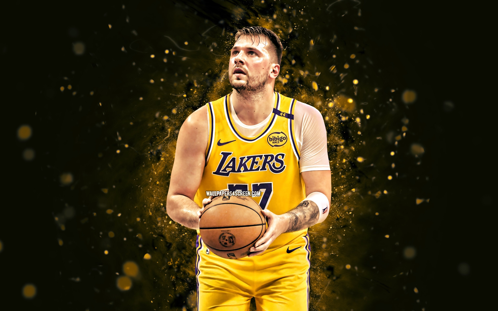

Biografía de Luka Dončić
- Fecha de nacimiento: 28 de febrero de 1999
- Lugar de nacimiento: Liubliana, Eslovenia
- Altura y peso: 2.01 metros, 104 kg
- Posición: Base / Escolta
- Equipo actual: Dallas Mavericks

Trayectoria Deportiva
Inicios y Europa
Luka comenzó su carrera profesional con el Real Madrid a los 16 años, ganando la Euroliga en 2018.
- Premio MVP de la Euroliga en 2018.
- Reconocido por su madurez y visión de juego desde joven.
Carrera en la NBA
Fue seleccionado en el Draft 2018 y traspasado a los Mavericks:
- Ganador del premio Rookie del Año en 2019.
- Múltiple All-Star y líder ofensivo del equipo.
Logros Internacionales
- Campeón del EuroBasket con Eslovenia en 2017.
- Figura destacada en los Juegos Olímpicos de Tokio 2020.
Vida Personal
- Fanático de los videojuegos y los animales.
- Gran vínculo con su madre, quien lo apoyó en su desarrollo.